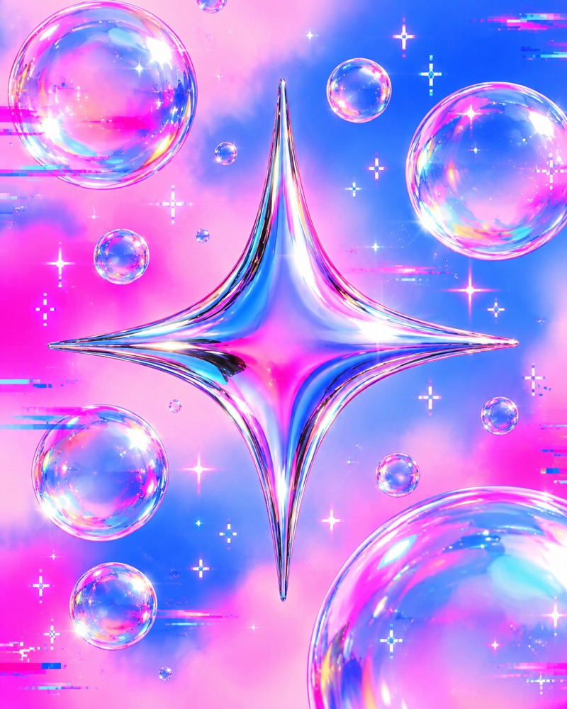
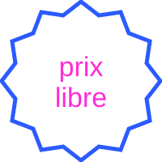
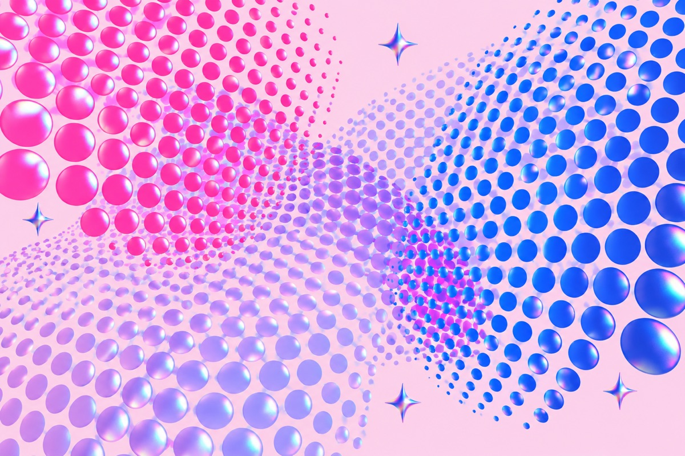

initiation dj
Deux platines, un ampli et des gens patients. Viens passer tes premiers disques, aucune expérience requise. De 14h à 17h.


Le collectif Palettes présente
Samedi 13 mars 2027 · La Friche, Yverdon-les-Bains
Pas de sponsors, pas de videurs, pas de tarif. L’entrée, la cantine et la bière PG sont à prix libre : tu donnes ce que tu peux. Ici, on prend soin les un·e·s des autres. Le harcèlement, c’est la porte.
Deux platines, un ampli et des gens patients. Viens passer tes premiers disques, aucune expérience requise. De 14h à 17h.

Ramène un t-shirt ou un tote bag : on y imprime l’affiche de la soirée en rose fluo. De 14h à 18h.
Dépose ce que tu ne portes plus, repars avec ce qui te plaît. Ce qui reste part à la ressourcerie. De 15h à 18h.
La Friche tourne grâce aux bénévoles. Choisis un créneau, on t’écrit la semaine d’avant.